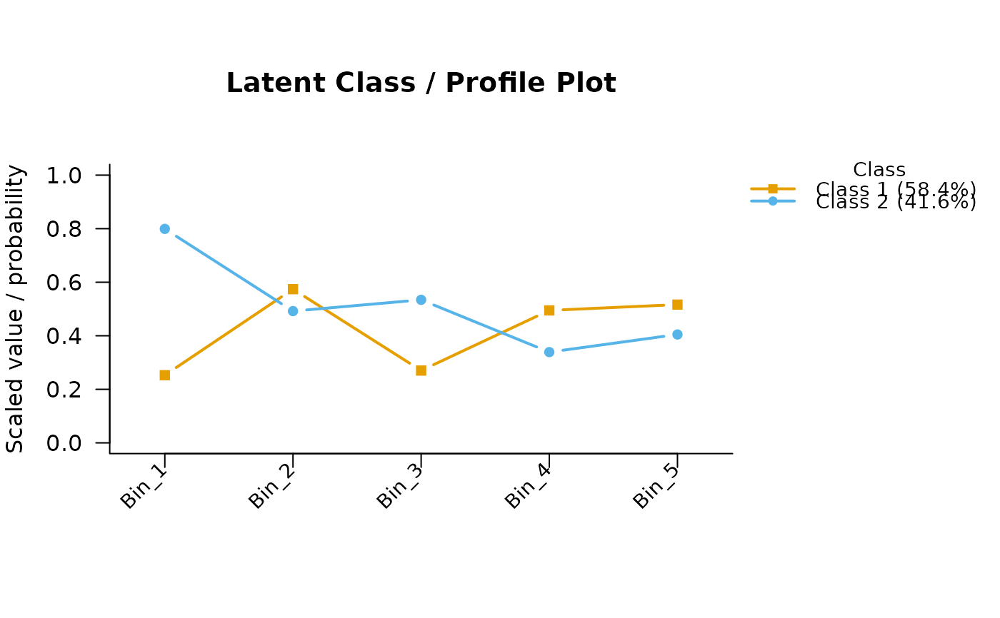

Draws the measurement model in one of three ways.
type = "profile" (the default) is a line plot: one line per latent class,
with every indicator placed on a common [0, 1] axis. Binary indicators are
shown as endorsement probabilities; continuous indicators are min-max scaled
against their observed range; polytomous indicators are summarised by their
expected category and scaled to [0, 1]. Rescaled items are marked with "*".
type = "bar" is the grouped bar chart of standardized class means that
applied latent-profile papers publish, and requires an all-continuous
measurement model. Indicators sit on the x-axis with one bar per class inside
each group; a bar above the zero line is an above-average conditional mean
and one below it a below-average mean. Heights are z-scores rather than the
profile plot's min-max scaling, which is hostage to a single extreme
observation and has no meaningful origin. Because a z-score is scale-free,
the figure is the same whether or not the indicators were standardized before
fitting, so standardization is a display choice here rather than a step in
preparing the data.
type = "line" draws those same z-scores as one connected line per class,
with a zero reference line, and likewise requires an all-continuous
measurement model. It answers a different question from the bar chart off the
same numbers: bars group by indicator and invite comparing classes one
indicator at a time, while a line follows a single class across all of them
and shows the shape of its profile — whether two classes differ in level or
in pattern. Prefer it over type = "profile" whenever every indicator is
continuous, since the min-max axis there has no meaningful origin and its
shape depends on the sample's most extreme observation.
Uses only base graphics and the colour-blind-friendly Okabe-Ito palette.
Arguments
- x
A fitted
mixture_modelobject.- type
One of
"profile"(the default min-max line plot),"bar"(the standardized profile bar chart) or"line"(the same standardized profile drawn as lines), all described above."bar"and"line"require an all-continuous measurement model.- main
Plot title. Defaults to a title chosen for
type.- class_labels
Optional character vector of labels for the classes. Defaults to "Class 1", "Class 2", ...
- colors
Optional vector of colours (one per class). Defaults to the Okabe-Ito palette, recycled if necessary.
- scale
For
type = "bar"andtype = "line", the denominator of the z-score."total"(the default) divides by the weighted observed SD of the indicator, which is what standardizing the indicators means in the applied literature and is what makes the figure invariant to pre-standardization."within"divides by the model-implied within-class SD pooled over classes, giving a Cohen's-d-like reading against residual rather than total dispersion."within"is arguably the more informative quantity; it is not the default because it is not what applied papers plot.- ...
Currently unused; present for S3 compatibility.
Examples
set.seed(1)
X <- matrix(rbinom(500, 1, 0.5), nrow = 100)
fit <- fit_mixture(X, n_classes = 2, measurement = "binary")
plot(fit)
